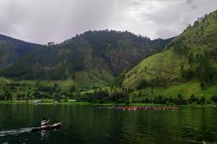
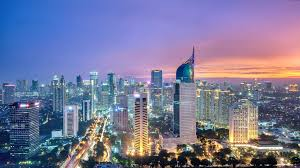
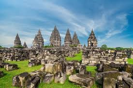
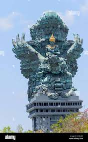
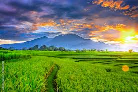

Indonesia is the largest country in Southeast Asia, with a maximum dimension from east
to west of about 3,200 miles (5,100 km) and an extent from north to south of 1,100 miles
(1,800 km). It shares a border with Malaysia in the northern part of Borneo and with
Papua New Guinea in the centre of New Guinea. Indonesia is composed of some 17,500
islands, of which more than 7,000 are uninhabited. Almost three-fourths of Indonesia’s
area is embraced by Sumatra, Kalimantan, and western New Guinea; Celebes, Java, and the
Moluccas account for most of the country’s remaining area.
Indonesia’s vegetation is similar to that of the Philippines, Malaysia, and Papua New
Guinea. There are some 40,000 species of flowering plants, including 5,000 species of
orchids, as well as the monster flower (Rafflesia arnoldii [see Rafflesiaceae]), which
is the world’s largest flower. There are more than 3,000 tree species, including durian,
which bears large, armoured, odorous yet edible fruit; sandalwood; Shorea macrophylla,
which yields illipe nuts, a fruit that contains a fat substance similar to cocoa
butter; and valuable timber varieties such as teak and ironwood. Woody rattan
(supplejack) vines are abundant in Indonesia’s forests. Thousands of plant species
are exploited for economic purposes, either directly or indirectly.
Most of the several hundred languages spoken in Indonesia have an Austronesian base.
The major exceptions are found in western New Guinea and some of the Moluccas, where
different Papuan languages are used. The Austronesian language family is broken into
several major groups within which languages are closely related though distinctly
different. On Java there are three major languages—Javanese, Sundanese, and
Madurese—while on Sumatra there are dozens, many of which are divided into distinct
dialects. Within the Toraja group, a relatively small population in the interior of
Celebes, several languages are spoken. In eastern Indonesia each island has its own
language, which is often not understood on the neighbouring islands. Similarly,
languages often differ from one village to the next in the interior of Kalimantan.
Indonesian (Bahasa Indonesia) is the national language. It evolved from a literary
style of Malay language that was used in the royal houses of the Riau-Jambi area of
eastern Sumatra, but it also has much in common with other Malay dialects that have
long served as regional lingua francas. The differences between standard Malay and
standard Indonesian reside largely in their idioms and in certain items of vocabulary.
In 1972 Indonesia and Malaysia agreed on a uniform revised spelling of the language so
that communications could be improved and literature more freely exchanged between the
two countries.
Because it has no distinctive expressions based on social hierarchy and is not associated with one of the dominant ethnic groups, the Indonesian language has been accepted without serious question and has served as a strong force of national unification. Since the early 20th century it has been the main language of print in different parts of the country; it also served as the medium of political communication among members of the nationalist movement leading up to the revolution and declaration of independence in 1945




>